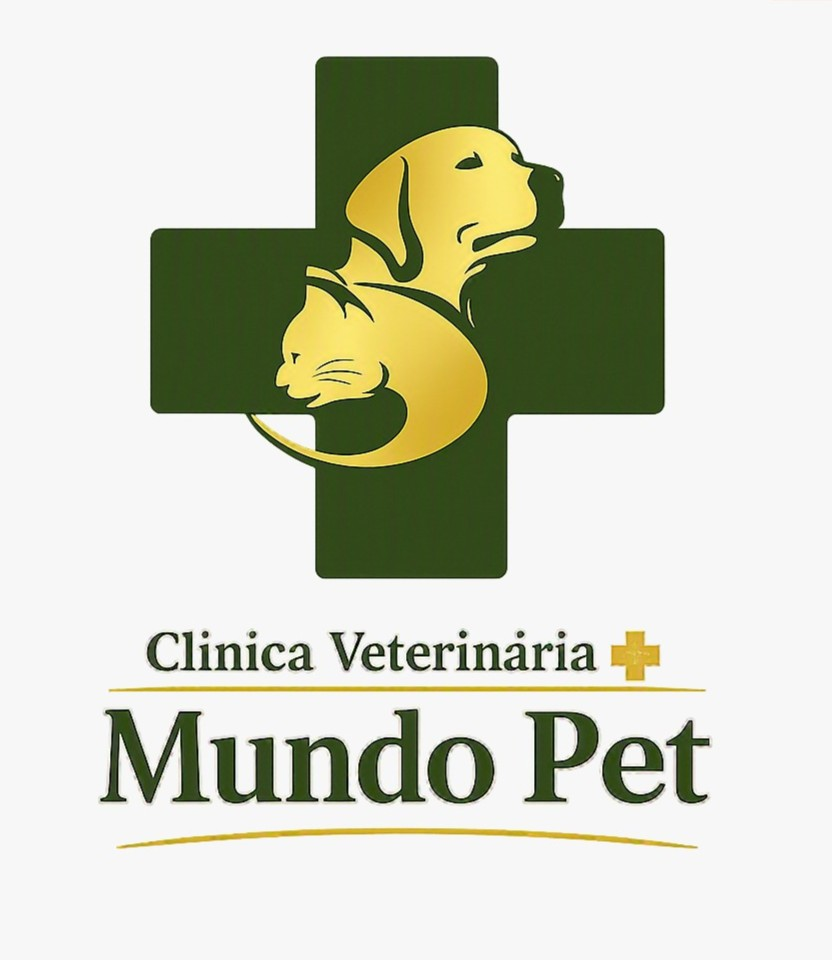

Consultas e especialidades
Atendimento de clínica geral e especialidades veterinárias por agendamento, conforme a necessidade do seu pet.

Clínica Veterinária Mundo Pet
Praça Vieira do Couto, 38 - Jardim Vila Formosa | Telefone: (11) 999259171Conheça os cuidados oferecidos pela Clínica Veterinária Mundo Pet.
Atendimento de clínica geral e especialidades veterinárias por agendamento, conforme a necessidade do seu pet.
Procedimentos cirúrgicos com acompanhamento e internação para cuidar do seu pet.
Exames laboratoriais e de imagem realizados na própria clínica.
Cuidados de higiene e bem-estar para o seu pet.
Vacinas para proteger cães e gatos em todas as fases da vida.